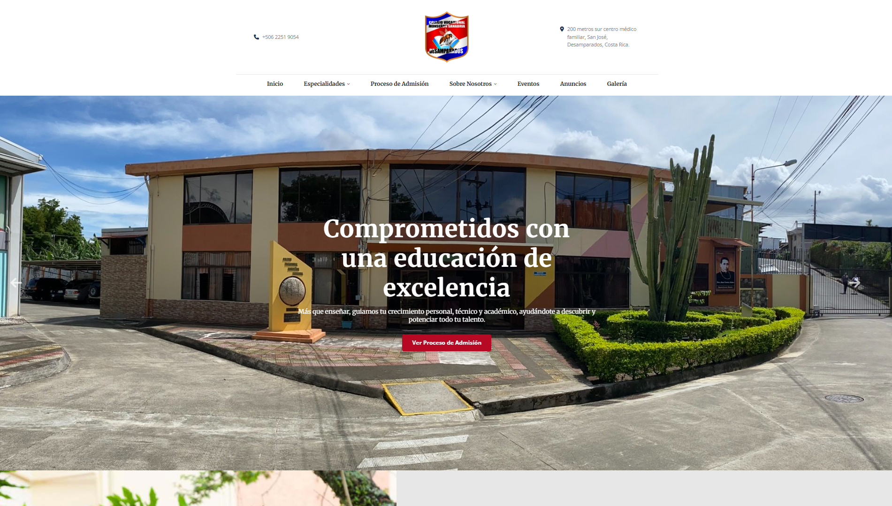
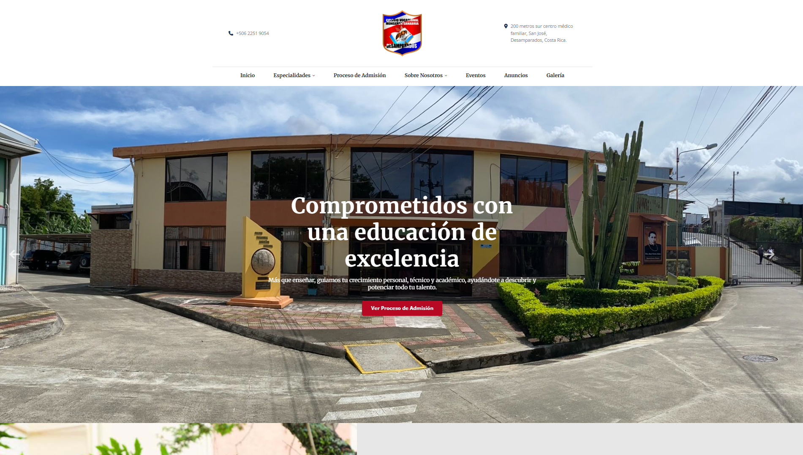

Hola, mi nombre es
JEREMY QUESADA.
Apasionado Desarrollador Full Stack enfocado en construir soluciones tecnológicas inteligentes y eficientes. He participado en proyectos privados con instituciones y empresas, siempre buscando crear herramientas rápidas, funcionales y bien elaboradas.
 
